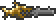
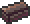

Star Cannon
| Star Cannon | |
|---|---|
| | |
| Statistics | |
| Type | Weapon |
| Damage | 60 |
| Max stack | 1 |
| Shoot speed | 14 |
| Rarity | Green |
| Use time | 9 (Very Fast) |
| Tooltip | Shoots fallen stars |
| Sell | 10 |
The Star Cannon is an upgraded version of the Minishark that shoots Fallen Stars. The Star Cannon deals 60 damage per shot, making it one of the most powerful weapons in the game.
For finding ammunition, the player may regularly pick up Fallen Stars even after maxing their mana. A skybridge can be used to farm them efficiently.
The Star Cannon can launch a Fallen Star 3150 blocks, or 6300 feet. The time period a star can survive is exactly 1 minute long so this means that the shooting star can travel at 52.5 blocks or 105 feet per second. After the star reaches this point it will explode with a firework animation, very similar to the Magic Missile.
Despite the additions of the Megashark and the Shotgun, even with the new ammo, the Star cannon remains in first place for sheer Damage per Second.
Crafting
Recipe
| Crafting Station | ||
|---|---|---|
| Ingredient(s) | Amount | |
|  | Minishark | 1 |
|  | Meteorite Bar | 20 |
| Fallen Star | 5 | |
| Result | ||
| Star Cannon | 1 | |
Notes
- Wearing the full set of Necro armor increases the base damage to 68, due to the armor's ranged damage bonus.
- Like the Space Gun, the Star Cannon doesn't count as a firearm, so if your Arms Dealer is killed and you don't have another firearm in your inventory, he will not return until you do.
- The Star Cannon is recommended for the Wall of Flesh boss fight since the increase of firing speed from very slow to very fast in the 1.1 Terraria Update.
- With the right equipment, one can achieve over 100 damage with the Star Cannon. This will cause the game to think the shot stars are actually shooting stars, allowing re-collection of shot stars if done at night. (Otherwise, shot stars will still disappear during the day, like normal, on impact.) With% chance of not using up ammo (such as the set bonus from full Necro Armor or range-focused 1.1 armor sets), one can farm a large amount of fallen stars in a small period of time.
History
- 1.1: Speed increased to Very Fast
- 1.0.5: Damage reduced from 75 to 60, rate of fire drastically reduced.
- Pre-Release: Introduced.
| Guns |
|---|
| Blowpipe Clockwork Assault Rifle Flamethrower Flintlock Pistol Handgun Megashark Minishark Musket Phoenix Blaster Sandgun Shotgun Star Cannon |
| Meteorite |
|---|
| Meteorite Meteorite Bar Meteor Shot Meteor Hamaxe Meteor armor Phaseblade Space Gun Star Cannon |